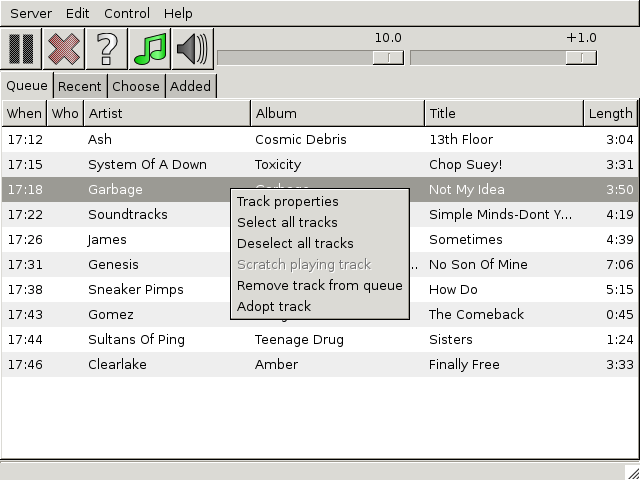
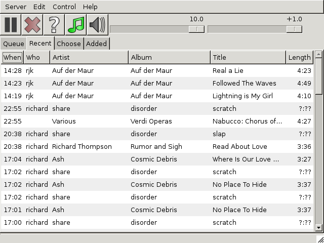
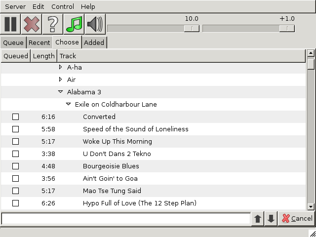
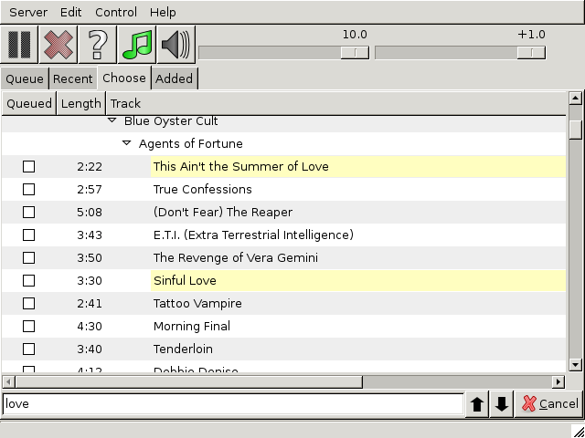

The chaper contains detailed descriptions of the Queue, Recent, Choose and Added tabs.
The Queue tab has already been briefly described, but there are some more things to say about. To start with, the meaning of the columns:
| When | This is the server's estimate of when the track will start. If play is disabled but the queue isn't empty, then it is based on the assumption that play is about to be enabled. |
| Who | This is the person who selected the track. If the track was picked at random by the server it is empty. You can “adopt” a randomly picked track; see below. |
| Artist | The artist responsible for the track. Like the other track name columns, this depends on the server's logic for parsing filename, so can be a bit wrong. You can edit the track properties to correct it. |
| Album | The album that the track came from. |
| Title | The title of the track. |
| Length | The length the track will play for. For the playing track this will include the amount of time it's been playing so far. |
You can select tracks in the queue by clicking on them. You can select multiple tracks by clicking in a second location with SHIFT depressed (to select all tracks between the first and second click) or with CTRL depressed (to add a single track to the selection).
Having selected tracks you can drag them to a new location in the queue. Of course, you can't drag the playing track, nor can you drag other tracks before it.
Right-clicking in the queue will create a pop-up menu:

Track Properties will create a window with editable properties of each selected track. Scratch playing track only works if the playing track is the selected track and will stop it playing. Remove track from queue will remove the selected (non-playing) tracks from the queue.
Adopt track will apply your name to one without an entry in the Who column, i.e. one that was randomly picked by the server. The reason you might do this is to signal to other users that you did want this track to play. (For instance, it might be an accepted convention that randomly picked tracks were fair game for removal but that tracks picked by a human should normally be left alone.)

The Recent tab is similar in structure to the queue but it shows tracks that have played recently. The When column indicates when the track played rather than when it will played.
Right clicking will create a pop-up menu with similar options to those found in the queue's equivalent menu. The one additional option is Play track, which allows a recently played track to be added back to the queue.
The other way of adding tracks from this tab back to the queue is to drag them to the queue tab and then to the desired point into the queue.
The Choose tab contains all the tracks known to the server, organized into a hierarchical structure based on the underlying file and directory structure.

The boxes in the Queued column are ticked if the track is somewhere in the queue. You can click on an unticked box to add the track to the queue, but clicking an already-ticked one will have no effect.
Directories can be expanded or collapsed by clicking on the triangular signs left of their names. Tracks can be selected and deselected by clicking on them. You can select multiple tracks by clicking in a second location with SHIFT depressed (to select all tracks between the first and second click) or with CTRL depressed (to add a single track to the selection).
Right clicking will create a pop-up menu with what are hopefuly now familiar options. Play track will add the selected track(s) to the queue and Track Properties will create a window with editable properties of each selected track.
Note that when tracks are added to the queue these ways they will be added before any tracks picked at random by the server, so that users don't have to wait for them to play out.
Selected tracks can also be dragged to the queue, by dragging first to the Queue tab itself and then to the desired location in the queue.

To do a word search over all tracks, you can just start typing. Your search terms will appear in the input box at the bottom of the window. Directories containing matching tracks are automatically opened and the matches highlighted in yellow. You can jump to the previous or next search result with the up and down arrows at the bottom right of the screen (or jump to the next one by pressing CTRL+G).
To clear the search, press the Cancel button.
The Added tab shows tracks that have been newly detected by the server, in order to allow those tracks to be conveniently played. In behavior it is the same as the recently played tracks list.